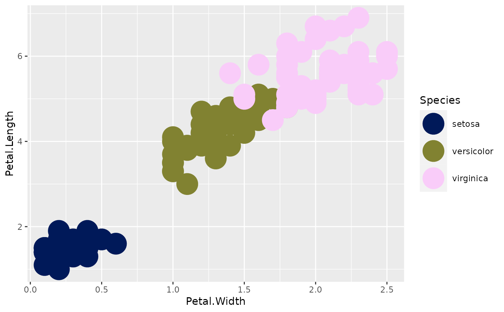

These functions provide the option to use the scico palettes along with the
ggplot2 package. It goes without saying that it requires ggplot2 to work.
scale_colour_scico(
...,
alpha = NULL,
begin = 0,
end = 1,
direction = 1,
palette = "bilbao",
midpoint = NA
)
scale_color_scico(
...,
alpha = NULL,
begin = 0,
end = 1,
direction = 1,
palette = "bilbao",
midpoint = NA
)
scale_fill_scico(
...,
alpha = NULL,
begin = 0,
end = 1,
direction = 1,
palette = "bilbao",
midpoint = NA
)
scale_colour_scico_d(
...,
alpha = 1,
begin = 0,
end = 1,
direction = 1,
palette = "batlow",
aesthetics = "colour"
)
scale_color_scico_d(
...,
alpha = 1,
begin = 0,
end = 1,
direction = 1,
palette = "batlow",
aesthetics = "colour"
)
scale_fill_scico_d(
...,
alpha = 1,
begin = 0,
end = 1,
direction = 1,
palette = "batlow",
aesthetics = "fill"
)Arguments to pass on to ggplot2::scale_colour_gradientn(),
ggplot2::scale_fill_gradientn(), ggplot2::ggplot2::discrete_scale()
The opacity of the generated colours. If specified rgba values
will be generated. The default (NULL) will generate rgb values which
corresponds to alpha = 1
The interval within the palette to sample colours from.
Defaults to 0 and 1 respectively
Either 1 or -1. If -1 the palette will be reversed
The name of the palette to sample from. See
scico_palette_names() for a list of possible names
A midpoint to center the scale on, used primarily for diverging and multisequential scales
Character string or vector of character strings listing the name(s) of the aesthetic(s) that this scale works with. This can be useful, for example, to apply colour settings to the colour and fill aesthetics at the same time, via aesthetics = c("colour", "fill").
A ScaleContinuous or ScaleDiscrete object that can be added to a
ggplot object
if (require('ggplot2')) {
volcano <- data.frame(
x = rep(seq_len(ncol(volcano)), each = nrow(volcano)),
y = rep(seq_len(nrow(volcano)), ncol(volcano)),
height = as.vector(volcano)
)
ggplot(volcano, aes(x = x, y = y, fill = height)) +
geom_raster() +
scale_fill_scico(palette = 'tokyo')
ggplot(iris, aes(x=Petal.Width, y=Petal.Length)) +
geom_point(aes(color=Species), size=10) +
scale_colour_scico_d()
}
#> Loading required package: ggplot2
